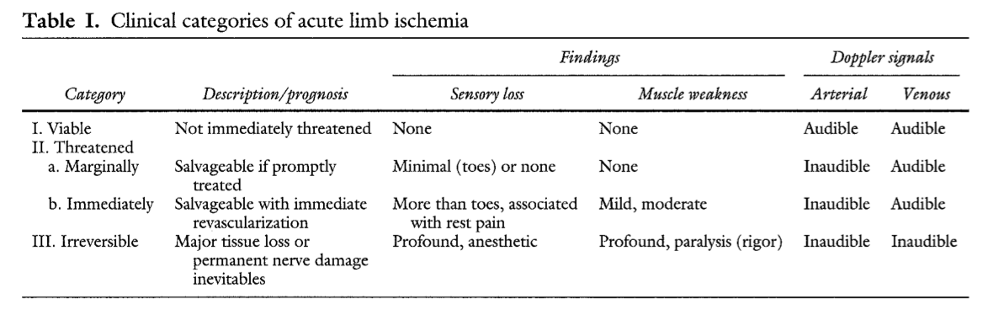

Critically Ischaemic Leg
DEFINITION
See also PVD
Threatened limb, secondary to vascular disease (stenosis,
thrombosis, embolism),
Six Ps
- pain
- pallor
- pulseless
- parasthesia
- paralysis
- poikilothermia
D I A B M I M
EPIDEMIOLOGY
Risk factors
Atherosclerosis risk factors.
D I A B M I M
AETIOLOGY
Us. Emboli or
Atherosclerosis
- either chronic
- or acute (thrombosis /
embolism)
Also less commonly
- Vasculitis
- Sepsis
- Trauma
- Hematological disorders
D I A B M I M
BIOLOGICAL BEHAVIOUR
Pathophysiology
Chronic plaques cause chronic ischaemia
Acute events result from thrombosis or embolism.
Natural history
This condition implies a threatened limb.

Complications
Ulcers
Gangrene.
Loss of limb.
D I A B M I M
MANIFESTATIONS
Symptoms
Local
Chronic
Pain
Severe & burning
May be exacerbated by warmth
Often made better by leaving foot exposed
Lack of gravity worsens ischaemia
- pt wakes 2-3hrs after sleeping
- holds leg over bed and has a cigarette
- or sleeps in a chair.
This is indicative of limb-threatening ischaemia.
Acute
Pain in a cold leg.
Signs
Look, Feel, Move
Acute
Pain, pallor, paralysis, pulseless, paraesthesiae.
- AF and good contralateral pulses strongly favours embolism.
- past claudication, reduced contralateral pulses, sinus rhythm
favours thrombosis.
Chronic
Observe
Pale
Venous guttering on elevation
Dependent rubor
- 'Buerger's test'
Ulcers / skin changes
- affects distally - under the toes, or feet.
Palpate
Cool
Reduced/absent pulses
ABI
Non compressible >1.4
Normal 1-1.4
Borderline 0.91-0.99
Some arterial disease 0.8-0.89
Moderate arterial disease 0.5-0.8
Critical <0.5
D I A B M I M
INVESTIGATIONS
Imaging
Early CT angiography.
Consider MR angiography is selected pts
Possible after revascularisation
- echo if emboli
- duplex USS
D I A B M I M
MANAGEMENT
Q: When should endovascular versus surgical intervention be used
for treatment?
A: On the basis of several randomized trials and recent case
series, catheter-directed thrombolysis has the best results in
patients with a viable or marginally threatened limb, recent
occlusion (no more than 2 weeks’ duration), thrombosis of a
synthetic graft or an occluded stent, and at least one
identifiable distal runoff vessel.
Surgical revascularization is generally preferred for patients
with an immediately threatened limb or with symptoms of occlusion
for more than 2 weeks.
Q: What is reperfusion injury?
A: Reperfusion may result in injury to the target limb,
including profound limb swelling with dramatic increases in
compartmental pressures.
Symptoms and signs include severe pain, hypoesthesia, and weakness
of the affected limb; myoglobinuria and elevation of the creatine
kinase level often occur.
Since the anterior compartment of the leg is the most susceptible,
assessment of peroneal-nerve function (motor function,
dorsiflexion of foot; sensory function, dorsum of foot and
first web space) should be performed after the revascularization
procedure.
The diagnosis is made primarily from the clinical findings but can
be confirmed if the compartment pressure is more than 30 mm Hg or
is within 30 mm Hg of diastolic pressure.
If the compartment syndrome occurs, surgical fasciotomy is
indicated to prevent irreversible neurologic and soft-tissue
damage.
Exam Answer
Definitive treatment depends on Rutherford classificaiton
Class III
- amputation, perhaps palliation
Class IIB
- immediate surgical exploration
- on table arteriography / balloon catheter embolectomy
Class IIa
- arteriography
- embolectomy or thrombolysis as indicated
Class I
- vascular risk prevention and workup by vascular surgeon as per sx.
Chronic Ischaemia
see notes
Embolic Event
Thombolysis
Embolectomy
- usually via common femoral artery
Followed by Heparin, Warfarin.
D I A B M I M